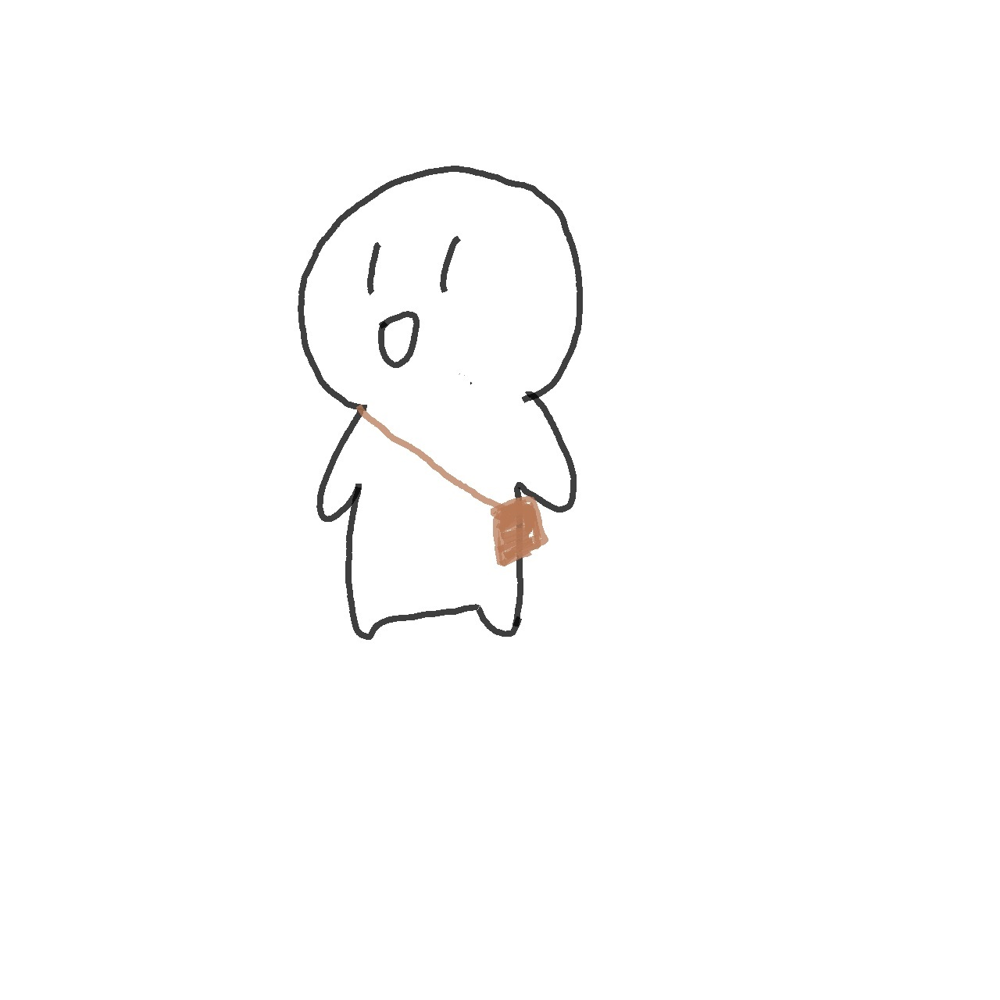
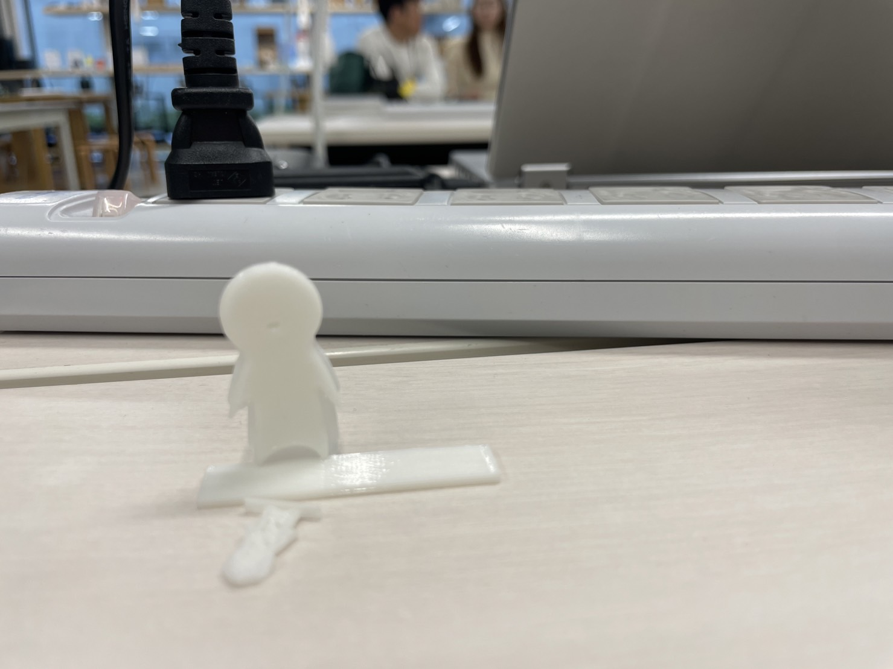
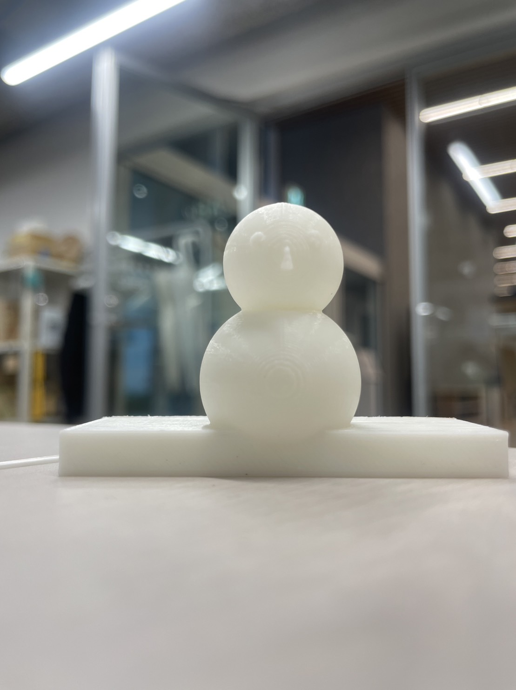
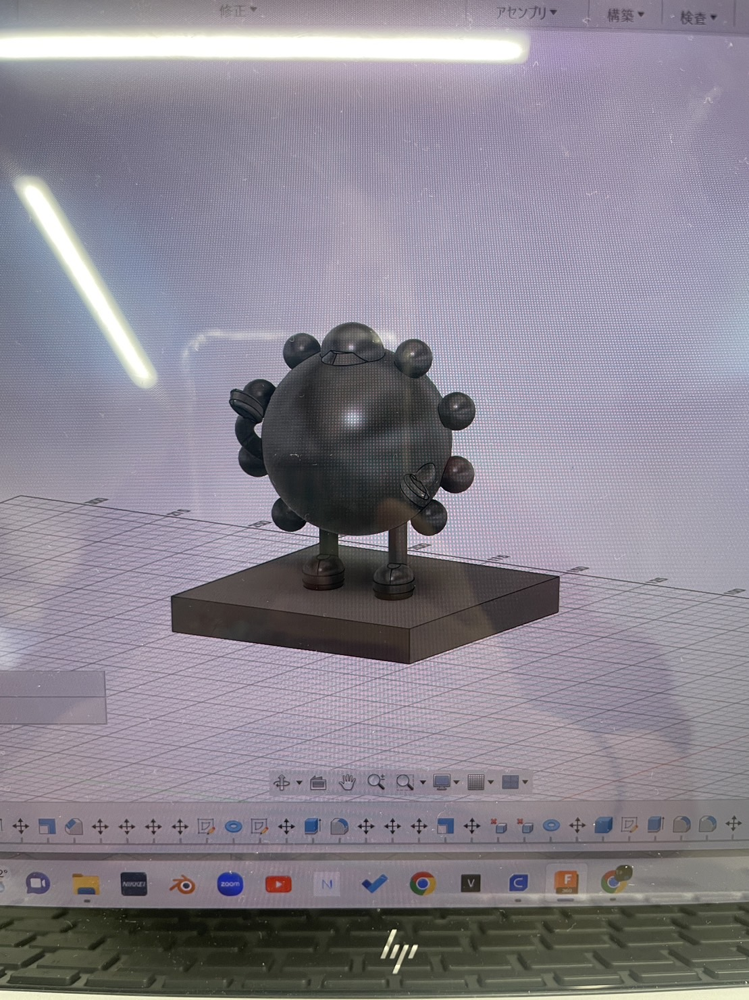
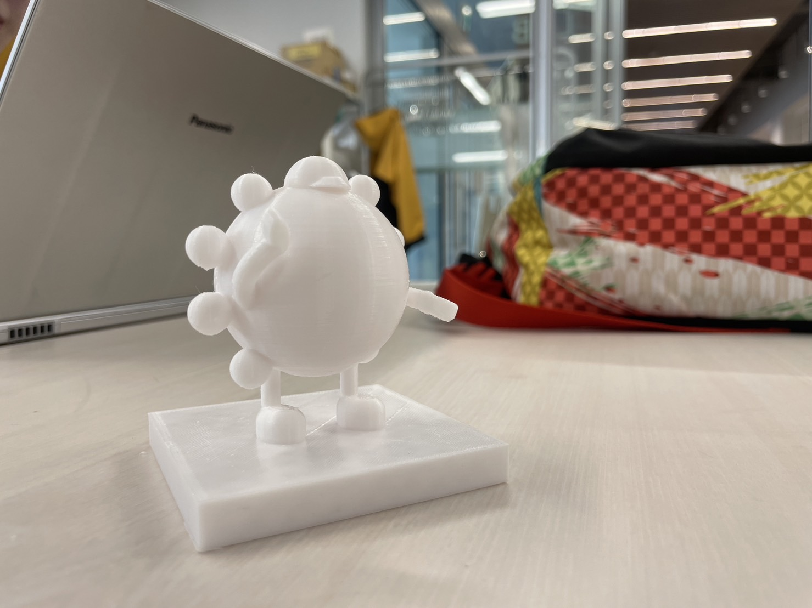
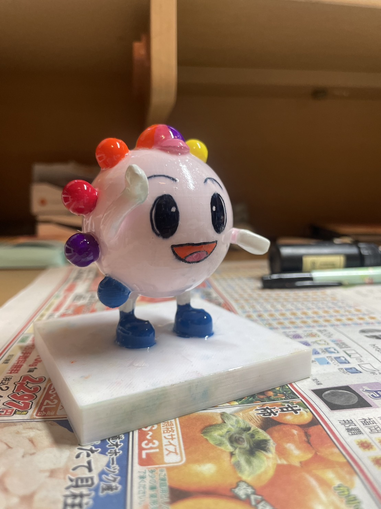

おあそび ３Ⅾプリンター編
最終更新 2023 10 16
--------------------------------------------------------------------
私が３Ⅾプリンターでつくったものをあげていきます
【１０月９日 月 】
３Ⅾプリンターデビュー日ψ(｀∇´)ψ
課題のピンセットをつくる前になんでもいいからお試しでプリントしたいなぁとおもい
私がよく描く
この子をつくってみようか

ちいさいぃかわいいぃ 平べったいけど・・・
お家に持って帰ったら折れちゃったし(；′⌒`)
この日はおわり まんぞくしてかえりました
【１０月１１日 水 】
ネットで調べてたら、どうぶつの森の雪だるまをつくってる人がいて
私も作りたくてつくってみましたぁ

すご～い 立体だぁ 薄っぺらじゃない(ง •_•)ง
色塗らないとね
【１０月１１日②】
キャンパス近くのバイト先の遊園地のキャラをつくってみようかとおもいました
まずは形の制作・・・

腕がかわいくできなくて苦戦しました┌( ´_ゝ` )┐
最初に提示された制作予定時間１日と１６時間と５８分（笑）
金曜日になっちゃうよ
さすがにちょっと縮小して制作予定時間７時間
一晩おかせていただきましたm(_ _"m)

サポート多すぎて、はずすのにも２０分くらいかかりました
前回にあの薄っぺらつくって喜んでたのがうそみたい
感動しかない
週末のバイトに持っていくんだ！きーめた

油性絵の具で色を塗ってレジンでコーティング
テカテカ・・・？赤とかりんご飴みたい笑